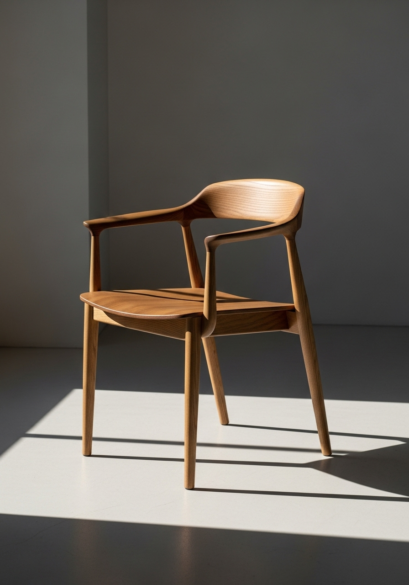

Nord Chair 01
やわらかなカーブと細い脚。
そこにあるだけで、空気が静かになる椅子。
Koti — Scandinavian Quiet Living
やわらかな朝の光と、白い壁。
そこに、すっと馴染む木の椅子。
Koti は、暮らしの中に「心の余白」をつくるための
家具ブランドです。
CONCEPT
北欧の暮らしは、光と余白を大切にします。 たくさん持つことよりも、少ないものと丁寧につき合うこと。
Koti の家具は、自然な木目と静かなシルエットから生まれる 「落ち着いた空気」をデザインしています。
朝、カーテンを開けて差し込む光。 仕事から帰ってきて、ふと深く息をつきたくなる部屋。 そんな時間をそっと支える、“静けさの家具”でありたいと考えています。
光と影、木の温度。Koti が大切にしているのは「派手さ」ではなく、 部屋に流れる“静かな空気”の質です。
About
北欧の暮らしが大切にしてきたのは、ものの数ではなく、ものとの距離でした。 余白のある部屋は、心に余裕をつくり、静けさは、時間の流れをやわらかくします。
Koti の家具は、その静かな空気をかたちにするために、 シルエット、光の入り方、木目の表情まで、すべてが丁寧に設計されています。
部屋に「足す」のではなく、空気を「整える」こと。 それが、Koti が目指している静けさのデザインです。
木材そのものが持つ温度と、光を受けたときの影のやわらかさ。 自然素材の不揃いさは、暮らしのリズムそのものです。 Koti はその「揺らぎ」を大切にしながら、空間になじむ静かな表情を選び取っています。
派手さよりも、落ち着いた佇まいを。 角の丸み、脚の太さ、天板の厚み。 すべてのラインが「音を立てない」ように、細部まで整えられています。 静けさは、つくり込みの先に生まれると考えています。
MESSAGE
静けさは、つくり込まれたデザインの先にある。
光が広がり、影がやわらかく落ちる部屋。 その空気をそっと支えるために、Koti は生まれました。
Products
部屋を埋めるのではなく、整えるための家具。
Koti のコレクションは、少数精鋭で構成されています。
やわらかなカーブと細い脚。
そこにあるだけで、空気が静かになる椅子。
まっすぐな線と、やわらかな角。
光と影が静かに移ろう、余白の多いテーブル。
壁にふわりと広がる光。
夜の部屋を、静かにやわらげるランプ。
Gallery
家具だけでなく、「空間としてどう見えるか」。
その視点で切り取った Koti の部屋たちです。